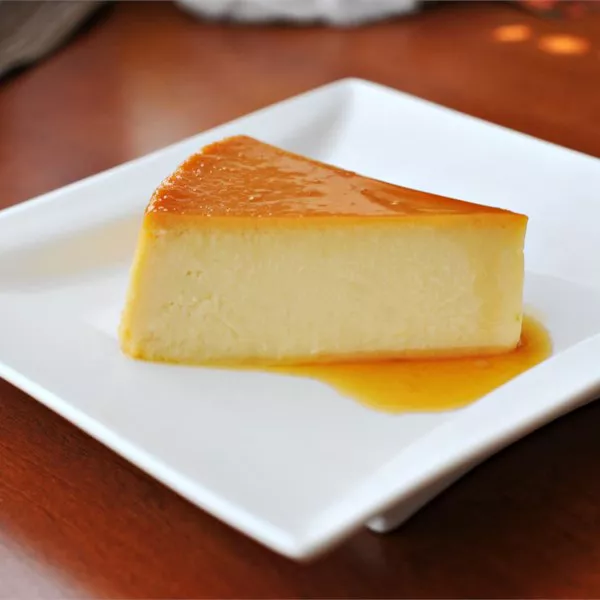

Flan

Description
Spanish flan is a creamy, egg based pudding dessert.
Easy to make and requires very little prep time!
Ingredients
- Sugar
- Eggs
- Condensed Milk
- Evaporated Milk
- Vanilla
Steps
- Melt the sugar on the stove, then pour it into a round baking dish.
- Beat the eggs in a large bowl, then stir in the remaining ingredients.
- Pour the egg mixture into the baking dish. Cover with foil.
- Bake for an hour in the preheated oven.